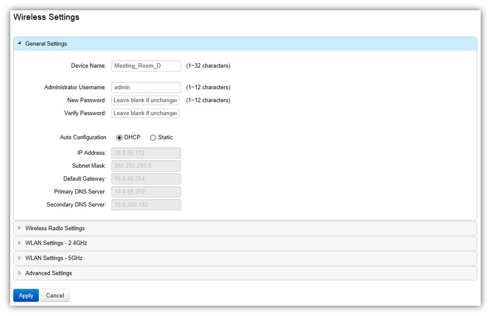

Device Management > Access Points > Wireless Settings
On this page, you can edit the AP's name, password, manually assign an IP address, or change the channel selection, transmit power and other wireless settings of a managed Access Point.

General Settings
Device Name: The device name of the Access Point. Users can enter a custom name for the Access Point if they wish.
Administrator Username: Displays the current administrator login username for the Access Point. Enter a new Administrator username for the Access Point if you wish to change the username. The default username is: admin.
New Password: Enter a new password of between 1~12 alphanumeric characters.
Verify Password: Enter the password again for confirmation.
Auto Configuration: Select whether the device IP address will use the static IP address specified in the IP Address field or be obtained automatically when the device connects to a DHCP server.
IP Address: Enter the IP address for the Access Point.
Subnet Mask: Enter the Subnet Mask for the Access Point.
Default Gateway: Enter the default Gateway for the Access Point.
Primary/Secondary DNS Server: Enter the Primary/Secondary DNS server name.
Wireless Radio Settings
Country: Select a Country/Region to conform to local regulations. Different regions have different rules that govern which channels can be used for wireless communications.
Wireless Mode: Select from the drop-down menu to set the wireless mode for the Access Point.
Channel HT Mode: Use the drop-down menu to select the channel width for 2.4GHz. A wider channel improves the performance, but some legacy devices operate only on either 20MHz or 40 MHz. This option is only available for 802.11n modes.
Extension Channel: Use the drop-down menu to set the Extension Channel as Upper or Lower channel. An extension channel is a secondary channel used to bond with the primary channel to increase this range to 40MHz allowing for greater bandwidth. This option is only available when Wireless Mode is 802.11n and Channel HT Mode is 20/40 MHz or 40MHz.
Channel: Select Auto or manually assign a channel for the 2.4GHz or 5GHz radio.
Transmit Power: Allows you to manually set the transmit power on 2.4GHz or 5GHz radios. Optimizing channel assignments reduces channel interference and channel utilization for the network, thereby improving overall network performance and increasing the network’s client capacity. The list of available channels that can be assigned to radios is determined based on which country the Access Points are deployed in.
Client Limits: Limit the total number of clients that can associate with this Access Point.
Data Rate: Use the drop-down list to set the available transmit data rates permitted for wireless clients. The data rate affects the throughput of the access point. The lower the data rate, the lower the throughput, but the longer transmission distance.
RTS/CTS Threshold: Enter a Request to Send (RTS) Threshold value between 1~2346. Use RTS/CTS to reduce data collisions on the wireless network if you have wireless clients that are associated with the same Access Point. Changing the RTS threshold can help control traffic flow through the Access Point. If you specify a lower threshold value, RTS packets will be sent more frequently. This will consume more bandwidth and reduce the throughput of the Access Point. Sending out more RTS packets can help the network recover from interference or collisions which might occur on a busy network or on a network experiencing electromagnetic interference.
Aggregation: Select whether to enable or disable Aggregation for the Access Point. This function merges data packets into one packet, reducing the number of packets. This also increases the packet sizes, so please keep this in mind. Aggregation is useful for increasing bandwidth throughput in environments that are prone to high error rates. This mode is only available for 802.11n modes. Fill in the frame rate limit you wish to use. The range is from 1~32. Next, fill in the max byte limit. The range is from 2304~65535.
WLAN Settings - 2.4GHz/5GHz
Basic Setting
Enable SSID: Select to enable or disable the SSID broadcasting.
SSID: Enter the SSID for the current profile. This is the name that is visible to wireless clients on the network.
Hidden SSID: Enable this option if you do not want to broadcast this SSID. This can help to discourage wireless users from connecting to a particular SSID.
Client Isolation: When enabled, all communication between wireless clients will be blocked.
VLAN Isolation: When enabled, all communications between wireless clients and any other devices on different VLANs will be blocked.
VLAN ID: Enter the VLAN ID for the SSID profile. The range is from 1~4094.
Note: For the Controller to function properly, make sure that all ports (on all cascading switches as well) connected to EWS APs on the switch are configured as the same VLAN ID as the Controller’s Management VLAN ID.
Traffic Shaping: Traffic Shaping regulates the flow of packets leaving an interface to deliver improved Quality of Service. Select to enable or disable Wireless Traffic Shaping for the Access Point.
Download Limit: Specifies the wireless transmission speed used for downloading.
Upload Limit: Specifies the wireless transmission speed used for uploading.
Fast Roaming: When this function is enabled, PMKSA will be distributed and cached on neighboring Access Points to facilitate roaming, reducing the number of handshakes.
Security: Select encryption method (WEP, WEP / WPA2 Enterprise, WPA-PSK / WPA2-PSK, or none) and encryption algorithm (AES or TKIP).
WEP: Wired Equivalent Privacy (WEP) is a data encryption protocol for 802.11 wireless networks which scrambles all data packets transmitted between the Access Point and
the wireless clients associated with it. Both the Access Point and the wireless client must use the same WEP key for data encryption and decryption.
- Mode: Select Open System or Shared Key.
- WEP Key: Select the WEP Key you wish to use.
- Input Type: ASCII: Regular Text or HEX. Select the key type. Your available options are ASCII and HEX. ASCII Key: You can choose upper and lower
case alphanumeric characters and special symbols such as @ and #. HEX Key: You can choose to use digits from 0~9 and letters from A~F. Select the bit-length of the encryption key to be used in the WEP connection. Your available options are: 64, 128, and 152-bit password lengths.
- Key Length: Select the desired option and ensure the wireless clients use the same setting. Your choices are: 64, 128, and 152-bit password lengths.
- Key1/2/3/4: Enter the Key value or values you wish to use.
WPA / WPA2 Enterprise: WPA and WPA2 are Wi-Fi Alliance IEEE 802.11i standards, which include AES and TKIP mechanisms.
- Type: Select the WPA type to use. Available options are Mixed, WPA and WPA2. Choose Mixed if your network has a mixture of older clients that only support WPA and TKIP, and newer client devices that support WPA2 and AES.
- Encryption: Select the WPA encryption type you would like. Your available options are: Both, TKIP(Temporal Key Integrity Protocol) and AES(Advanced Encryption Standard).
- RADIUS Server: Enter the IP address of the RADIUS server.
- RADIUS: Port: Enter the port number used for connections to the RADIUS server.
- RADIUS Secret: Enter the secret required to connect to the Radius server.
- Update Interval: Specify how often, in seconds, the group key changes. Select 0 to disable.
- RADIUS Accounting: Enables or disables the accounting feature.
- RADIUS Accounting Server: Enter the IP address of the RADIUS accounting server.
- RADIUS Accounting Port: Enter the port number used for connections to the RADIUS accounting server.
- RADIUS Accounting Secret: Enter the secret required to connect to the RADIUS accounting server.
- Accounting Group Key Update Interval: Specify how often, in seconds, the accounting data sends. The range is from 60~600 seconds.
WPA-PSK / WPA2-PSK: WPA with PSK (Pre-shared key / Personal mode), designed for home and small office networks that don't require the complexity of an 802.1X authentication server.
- Type: Select the WPA-PSK type to use. Available options are Mixed, WPA-PSK and WPA2-PSK. Choose Mixed if your network has a mixture of older clients that only support WPA and TKIP, and newer client devices that support WPA2 and AES.
- Encryption: Select the WPA encryption type you would like. Your available options are: Both, TKIP(Temporal Key Integrity Protocol) and AES(Advanced Encryption Standard).
- WPA Passphrase: Enter the Passphrase you wish to use. If you are using the ASCII format, the Key must be between 8~64 characters in length.
- Group Key Update Interval: Specify how often, in seconds, the Group Key changes.
Advanced Settings
LED Control: This option allows you to enable or disable the devices LED. Note that only indoor models support LED On/Off.
Band Steering: Click to enable or disable Band Steering. When enabled, 5GHz capable clients will only be allowed to connect to 5GHz radio, and not be able to connect to 2.4GHz radio. Note that the 2.4GHz and5 GHz SSIDs must have the same security settings.
Fast Handover: With Fast Handover enabled, the Access Point will send a disassociation request to the wireless client and let it find another AP to handover and associate upon detecting the wireless client’s RSSI value lower than specified. The RSSI value can be adjusted to allow for more clients to stay associated to this Access Point. Note that setting the RSSI value too low may cause wireless clients to reconnect frequently. The range is from -90 dBm~60 dBm.
Guest Network: The Guest Network feature allows administrators to grant Internet connectivity to visitors or guests while keeping other networked devices and sensitive personal or company information private and secure. After enabling the Guest Network SSID, enter IP address and Subnet mask for the Guest Network and assign an IP address range for wireless clients connecting to the Guest Network.
Created with the Personal Edition of HelpNDoc: Easy CHM and documentation editor